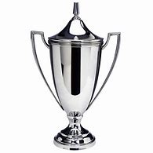

What is Trophy?
Introduction:
Every internationally recognized sport has a reward(trophies), hence different trophies has earned global recognition as sports keep on emerging by the day. Most of these trophies are issued by international communities or individuals sometimes in honour of the sports person or the sports team as the case may be.
Trophy is very significant to every sport as it triggers the spirit of competition amongst the competitors and also encourage the sports lovers and parents to enroll thier children in sporting academies and training centers so as to keep on the continuity of various sports competitions present today and many more still to emerge with time.
Topic Highlights
WHAT IS A TROPHY
A trophy can be seen as anything gained from a contest or from a war (the reward for victory) usually reserved for memorial purposes.
Seeing a trophy from the perspective of a war, it is usually weapon of the emperor of the defeated empire or the weapon of the leader of a particular enemy's army. It is usually kept for memories and historical purposes. In sports, a trophy can be a decorated valuable metal cup or any form of specially made item presented to a person or to a team to show their victory after winning a competition
Generally, we can say that a trophy is a mark of victory stored for memorial purposes.
THE HISTORY AND EVOLUTION OF TROPHY

The word 'Trophy', originates from the greek word 'Tropaion' which means to rout. Trophy has been in existence since the history of man, hence the history of trophy can be traced to the history of human race . Without international recognition, trophy has existed in different localities and in different forms in the World
In ancient wars, Human parts were used as trophies where the enemy's body parts are cut and presented as a trophy. Also in ancient sports, winners are sometimes presented with olive oil and laurel wreath before silver cups were used as trophies .
Progressively, Chalices became a trophy option for sports events in the late 15's and it has been evolving till today.
THE EVOLUTION OF TROPHIES
With the discovery and deployment of many sports facilities, Trophies has continually been evolving ranging from the design improvement and the value. Taking reference from the history of trophy, you will understand that trophies has changed a lot and many kinds of trophies has come into existence today and many ancient trophies has for long been diminished due to their irrelivances in the modern days sport.
Since technological war-fare came into practice, different ways of collecting trophies in the ancient world especially from ancient battles has been discouraged hence diminishing most of the ancestral trophies and also giving rise to new ones.
INTERNATIONAL COMMUNITIES RESPONSIBLE FOR MODERN DAYS TROPHIES IN SOCCER
In the modern days soccer tournaments or competitions, some communities with the introduction of several competitions has brought about support for several trophies as well giving the level of international recognition for football an enviable distinct from many other kinds of sports recognized globally today.
Most of these communities responsible for international football tournaments are governed by the Federation Of International Football Association(FIFA).
Some of these communities includes:
Later in the topic we will discuss some of the NON-FIFA communities also responsible for organizing competitions and awarding trophies.
FIFA
The Federation of International Footbal Association(FIFA) was founded in the year 1904 with the purpose of governing international competitions between France, Denmark, Belgium, Netherland, Germany, Spain, Switzerland and Sweden. But now divides into six regional confederation which comprises of 211 nations as members. FIFA has it's headquater in Zurich Switzerland and headed by Gianni Infantino(president), Salman Ibrahim Al Khalifa(Senior Vice president) and has the head of it's six regional confederations as the vice presidents.
FIFA has affiliates with other organizations including International Olympic Committee and International Football Association Board.
FIFA COMPETITIONS AND AWARDS
FIFA in conjuction with it's affiliates organizes international competitions and also organizes annual international award ceremonies.
Some of FIFA's competitions includes:
Some of the awards organized by FIFA includes:
NON-FIFA INTERNATIONAL COMMUNITIES
Though FIFA is created with the purpose of overseeing all international football competitions globally through it's confederations, there are still other bodies who exist without FIFA membership. Some of these bodies includes
Summary
1. War
2. Seminars
3. public speeches ETC